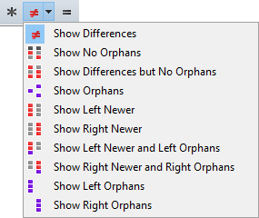

Display filters limit the view to certain comparison results. For example, you can pick Show Differences  to hide all the matching files so that you can concentrate on the mismatches. The current display filter choice will be saved whenever you leave a session, unless that session is locked.
to hide all the matching files so that you can concentrate on the mismatches. The current display filter choice will be saved whenever you leave a session, unless that session is locked.
Most of the session types have some sort of display filter implementation. The examples below are from a Folder Compare session.
Right-click on the toolbar to pick one of three built-in ways to show display filters on the toolbar: DropDown, Favorites or Toggles. Or, pick Toolbar Options to create your own custom layout.
DropDown layout
DropDown is the default style for the toolbar, designed for simplicity and to save space on the toolbar.

The buttons represent Show All  , Show Differences
, Show Differences  and Show Same
and Show Same  . The dropdown on the middle button lets you pick a different combination display filter.
. The dropdown on the middle button lets you pick a different combination display filter.
Favorites layout
The Favorites style includes various filter combinations on the toolbar.
Toggles layout
Toggles represent the individual comparison states.
Pick this mode when you want combinations that are not available with the other display filters. For example, the Toggles shown above will display Left Orphans and Right Newer, and nothing else.